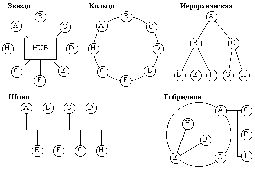

Принципы создания компьютерных сетей.
Семиуровневая модель OSI/ISO.
Компьютерные сети
Термин "компьютерные сети" обозначает набор автономных компьютеров, связанных между собой. Два компьютера являются связанными, если они могут обмениваться информацией. Сети также могут объединяться. Самым известным примером сети является Интернет.

Топологии сетей
Кольцевая – сеть, в которой к каждому компьютеру присоединены только два компьютера. Звездообразная сеть, в которой имеется только один промежуточный компьютер – хаб, через который все члены сети сообщаются друг с другом. Сеть "шина" – в этом случае подключение и обмен данными производится через общий канал связи, называемый общей шиной. Сеть, которая содержит более двух компьютеров, и в которой между двумя компьютерами имеется только один путь. Полносвязная сеть – сеть, в которой имеется связь между любыми двумя компьютерами.
Локальные и глобальная сети
Локальная сеть, LAN – сеть имеющая замкнутую инфраструктуру до выхода на поставщиков услуг. Глобальная сеть, WAN – сеть покрывающая большие географические регионы, включающие в себя локальные сети.
Cвойства открытых сетей
Масштабируемость – сохранение работоспособности системы при включении дополнительных компьютеров в сеть. Открытость – любые два компьютера должны взаимодействовать между собой, несмотря на различие в конструкции, производительности, функциональном назначении. Гибкость - сохранение работоспособности при изменении структуры в результате выхода из строя компьютера или линии связи.
Сетевая модель OSI
OSI (Open System Interconnection) - "эталонная модель взаимодействия открытых систем". Согласно требованиям эталонной модели, каждая система сети должна осуществлять взаимодействие посредством передачи кадра данных. Согласно модели OSI образование и передача кадра осуществляется с помощью семи последовательных действий, получивших название "уровень обработки".

Модель OSI
Основная идея этой модели заключается в том, что каждому уровню отводится конкретная роль, в том числе и транспортной среде. Благодаря этому общая задача передачи данных расчленяется на отдельные легко обозримые задачи. Отдельные уровни базовой модели проходят в направлении вниз от источника данных и в направлении вверх от приемника данных.
Физический уровень
Включает физические аспекты передачи двоичной информации по линии связи. Детально описывает, например, напряжения, частоты, природу передающей среды. Этому уровню вменяется в обязанность поддержание связи и прием-передача битового потока. Безошибочность желательна, но не требуется.
Канальный уровень
Обеспечивает безошибочную передачу блоков данных (кадров) через уровень 1. Этот уровень должен определять начало и конец кадра в битовом потоке, формировать из данных, передаваемых физическим уровнем, кадры или последовательности , включать процедуру проверки наличия ошибок и их исправления. Этот уровень (и только он) оперирует такими элементами, как битовые последовательности, методы кодирования, маркеры. Он несет ответственность за правильную передачу данных (пакетов) на участках между непосредственно связанными элементами сети.
Протоколы канального уровня
В виду его сложности, канальный уровень подразделяется на два подуровня (Стандарт IEEE 802.2):
MAC (Medium Access Control) - Управление доступом к среде.
LLC (Logical Link Control) - Управление логической связью (каналом).
Сетевой уровень
Основной функцией программного обеспечения на этом уровне является выборка информации из источника, преобразование ее в пакеты и правильная передача в точку назначения.
Транспортный уровень
Транспортный уровень реализует надежный транспортный сервис в межсетевом окружении, прозрачный для верхних уровней модели OSI. Обычно функции транспортного уровня включают управление потоком, организацию виртуальных соединений и обнаружение и исправление ошибок.

Схема протоколов
Сеансовый уровень
Координирует взаимодействие связывающихся пользователей: устанавливает их связь, оперирует с ней, восстанавливает аварийно оконченные сеансы.
Уровень представления данных
Здесь устанавливается взаимопонимание двух сообщающихся компьютеров относительно того, как компьютеры представляют и понимают по получении передаваемую информацию. Здесь решаются, например, такие задачи, как перекодировка текстовой информации и изображений, сжатие и распаковка, поддержка сетевых файловых систем, абстрактных структур данных и т.д.
Прикладной уровень
Обеспечивает интерфейс между пользователем и сетью, делает доступными для человека всевозможные услуги. На этом уровне реализуется, по крайней мере, пять прикладных служб: передача файлов, удаленный терминальный доступ, электронная передача сообщений, служба справочника и управление сетью.